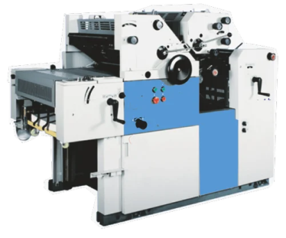

At BRP PRINTERS, our printing process is empowered by an advanced suite of machinery, chosen for its precision and efficiency. These sophisticated tools play a pivotal role in ensuring the seamless execution of every project. From achieving vibrant prints to meticulous folding and binding, each piece of equipment contributes to our pursuit of superior quality. Our focus on leveraging cutting-edge technology underscores our goal to provide clients with innovative and tailored printing services. At BRP PRINTERS, our machinery represents the pinnacle of technological innovation, supporting our mission to exceed industry standards and deliver prints of unmatched excellence.
KOMORI LITHRONE 4 - COLOR MACHINE
The Komori Lithrone 4-color machine at BRP PRINTERS is a cutting-edge printing tool designed for precision and vibrant results. With its advanced 4-color capabilities, this machine ensures accurate color reproduction and intricate detailing in every print. It plays a crucial role in our ability to deliver visually striking outputs across various projects. The technological prowess of the Komori Lithrone aligns seamlessly with our commitment to providing clients with high-quality prints that capture the essence of their designs.

HEIDELBERG 2 - COLOR MACHINE
The Heidelberg 2-color machine stands as a paragon of classic printing sophistication at BRP PRINTERS. With its dual-color capabilities, it introduces a timeless elegance to every print. This versatile machine seamlessly blends reliability with creativity, ensuring exceptional results for a diverse array of printing projects. Whether capturing the rich hues of artwork or the simplicity of corporate branding, the Heidelberg 2-color machine lends a touch of classic charm to our prints. Its enduring legacy is built upon the perfect fusion of tradition and technology, making it an indispensable part of our commitment to delivering prints that not only meet but exceed expectations.

FOLDING MACHINE
Precision meets practicality with our folding machine, a meticulous powerhouse that adds a professional touch to diverse projects. As it intricately crafts crisp folds, this machine transforms printed materials with an unwavering eye for detail. Its efficiency goes beyond the physical act of folding; it contributes to the seamless and organized presentation of each project. From brochures to pamphlets, this folding machine ensures that every piece is not just a print but a refined presentation. It encapsulates our dedication to precision and excellence, playing a vital role in the impeccable finish of our diverse range of printed materials.

PERFECT BOOK BINDING MACHINE
The perfect book binding machine redefines durability and finesse in crafting books and diaries at BRP PRINTERS. This advanced equipment guarantees a flawless finish, combining precision with efficiency in the creation of enduring printed materials. Beyond its technical prowess in binding, this machine serves as a symbolic representation of our dedication to delivering quality. Every page, every cover, and every binding is a testament to the meticulous care we invest in ensuring that our crafted books not only meet but surpass expectations. The perfect book binding machine is not just a tool; it's an embodiment of our commitment to delivering a sensory and tactile experience through our prints.

CENTRE PINNING MACHINE
Practicality and precision converge in our binding process, spearheaded by the centre pinning machine. This versatile tool secures various printed materials, ensuring a secure and organized outcome. It plays a pivotal role in delivering prints that are not only securely bound but also exceed expectations. As it meticulously pins together pages, brochures, and other printed materials, this machine becomes an essential part of our commitment to excellence. The centre pinning machine reflects our dedication to delivering prints that don't merely meet standards but set new benchmarks in quality, security, and presentation.

BUNDLE PACKING MACHINE
The bundle packing machine at BRP PRINTERS underscores both efficiency and security in the delivery of our printed products. This crucial machine ensures that our prints, meticulously crafted and packaged, reach our clients with care and professionalism. Beyond its functional role, the bundle packing machine symbolizes our commitment to delivering not just prints but experiences. It embodies our understanding that the journey of a print doesn't end with its creation but extends to how it's presented and received. Securely packaged and ready to make an impact, every bundle reflects our dedication to excellence from creation to delivery.

POLAR CUTTING MACHINE
The Polar Cutting Machine stands as the epitome of precision and efficiency in our print finishing process. With cutting-edge technology at its core, this machine ensures a level of accuracy that transforms the way we handle print materials. It excels in delivering clean and precise cuts, enhancing the overall quality of our printed products. This state-of-the-art equipment plays a pivotal role in our commitment to providing top-notch services, setting a new standard in the printing industry. As an integral part of our machinery lineup, the Polar Cutting Machine reflects our dedication to employing the latest advancements to meet and exceed the expectations of our clients.